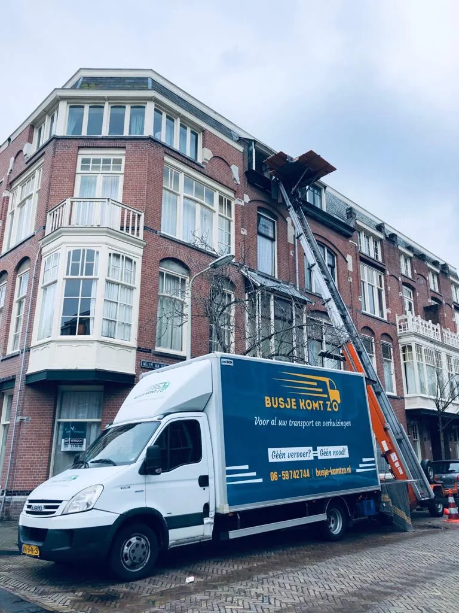
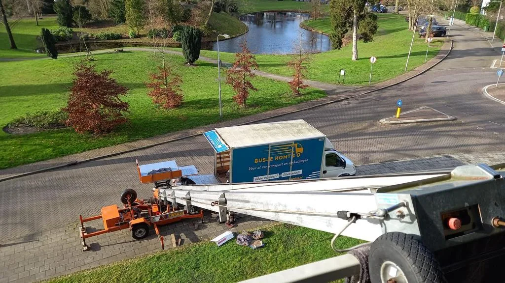
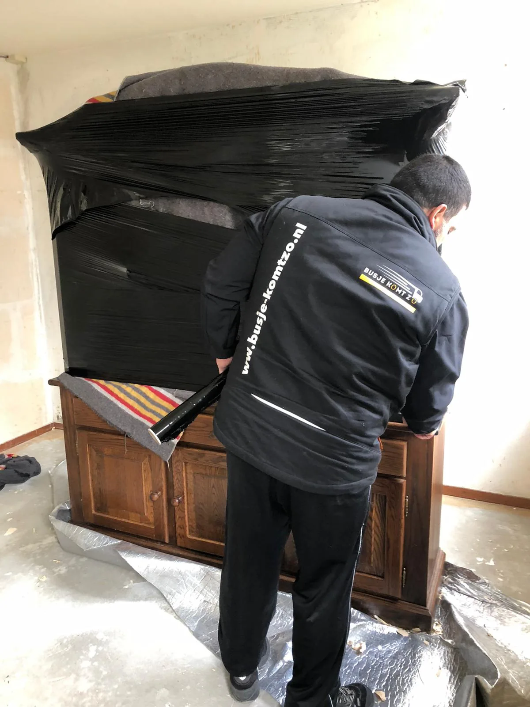
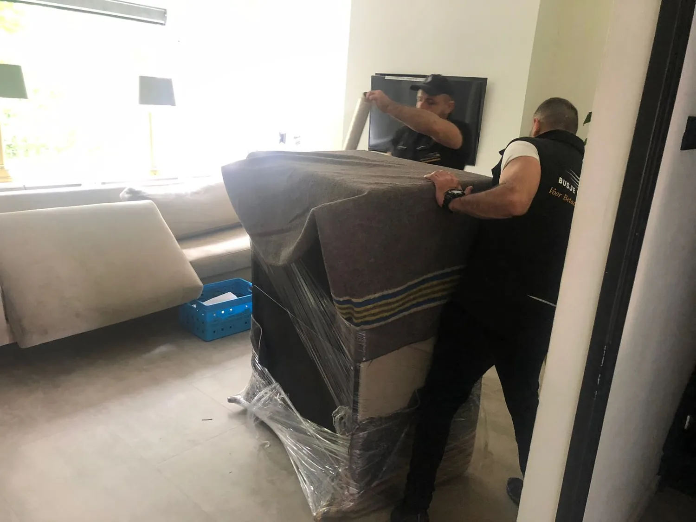

Renier
“Wat een topervaring bij Busje Komt Zo. Van de eerste offerte tot het monteren van de laatste kast was alles 10/10. Duidelijke communicatie, nette en zorgvuldige aanpak en een super service.”
Verhuisbedrijf in Utrecht en omgeving
Vertel ons kort uw verhuizing en u krijgt snel een persoonlijk voorstel, helder en zonder verrassingen.

Beelden van het verhuiswerk
Deze foto's zijn door het bedrijf aangeleverd en tonen echte verhuizingen, eigen materieel en zorgvuldig beschermd meubilair.


Ervaringen van klanten
Echte ervaringen van klanten in Utrecht en omgeving, op Google en Trustoo.
“Wat een topervaring bij Busje Komt Zo. Van de eerste offerte tot het monteren van de laatste kast was alles 10/10. Duidelijke communicatie, nette en zorgvuldige aanpak en een super service.”
“… Prima job, goeie gasten, deden voorzichtig met m’n spullen, geen schade, geen klachten. Uitladen op 2 adressen was geen probleem, ruim binnen de tijd klaar, zonder stress. Van harte aan te bevelen dus.”
“Top ervaring! Hele professionele aardige mannen. Werken netjes en efficiënt. Zou ze absoluut aanraden.”
“Top verhuisbedrijf. Het was allemaal snel geregeld zonder dat ik allerlei vragenlijsten moest invullen. … Ik had echt veel spullen, maar heb nog nooit zo'n efficiënte en vlotte verhuizing gehad.”
“Vriendelijk, netjes gewerkt, op tijd en vlot met de montage.”
“Hard gewerkt en een grote verhuizing snel en zorgvuldig uitgevoerd.”
Diensten
Kies wat u nodig heeft. Twijfelt u? Bel of app ons, dan zeggen we eerlijk wat bij uw situatie past. Alle diensten bekijken →
Appartement, eengezinswoning of studio, met of zonder lift. Wij dragen, rijden en zetten alles op zijn plek.
Meer hieroverKantoor of bedrijfsinventaris, gepland op een moment dat uw werk zo min mogelijk stilligt.
Meer hieroverSmalle trap of een grachtenpand? Dan gaat uw inboedel veilig via het raam naar binnen of buiten.
Meer hieroverZit er tijd tussen twee sleutelmomenten? Uw inboedel staat droog en veilig opgeslagen.
Meer hieroverWij pakken in, beschermen breekbare spullen en pakken op het nieuwe adres weer uit.
Meer hieroverMoet het morgen al? Bel ons direct, dan hoort u meteen wat er nog mogelijk is.
Bel 085 050 8282Woning of bedrijfspand helemaal leeg en bezemschoon opgeleverd, inclusief afvoer.
Meer hieroverEén meubelstuk of een losse lading die snel ergens anders moet zijn? Dat rijden wij ook.
Meer hieroverVerhuizen in en rond Utrecht
Kies de route die bij uw aanvraag past. Daarna controleert u beide adressen, bereikbaarheid, volume en gewenste hulp.
Beschrijf vertrek en aankomst afzonderlijk. Etage, lift, loopafstand en laadruimte kunnen per adres verschillen.
Controleer een route binnen Utrecht →Geef ook de aankomstzijde volledig door, zodat toegang, verkeersruimte en mogelijke voorbereiding beoordeeld kunnen worden.
Bereid aankomst in Utrecht voor →Laat de volledige route beoordelen. De afstand alleen vertelt nog niet hoeveel tijd, mensen of voertuigruimte nodig zijn.
Bereken eerst het verhuisvolume →
Goed voorbereid verhuizen
Een goede offerte begint niet bij uw telefoonnummer, maar bij de verhuizing zelf. Beschrijf beide adressen, de bereikbaarheid en wat er meegaat. Zo kan uw aanvraag gericht worden beoordeeld.
Bereid uw verhuizing in Utrecht voor →Bekijk de volledige werkwijze →Van vraag naar afspraak
U houdt overzicht over wat al is berekend en wat nog beoordeeld moet worden.
Bekijk een indicatie met de bevestigde prijsregels.
Vul route, toegang, omvang en gewenste hulp aan.
Ontvang een offerte met werkzaamheden en afspraak.
Veelgestelde vragen
Duidelijke antwoorden op de meestgestelde vragen over verhuizen in Utrecht en omgeving.
Ja. We spreken vooraf een duidelijke, vaste prijs af nadat we uw verhuizing hebben beoordeeld, helder en zonder verrassingen achteraf.
Van uw hoeveelheid (m³), de afstand, de bereikbaarheid zoals etage en lift, en de hulp die u wenst. Vertel ons uw situatie en u krijgt een voorstel op maat.
Dat hoeft u niet zelf te bepalen. Op basis van uw inboedel en de toegang stellen wij het juiste team samen, zodat uw verhuizing vlot en veilig verloopt.
Dat hangt af van het volume en de bereikbaarheid van beide adressen. We plannen efficiënt en bespreken vooraf een realistische tijdsinschatting.
Ja, uw inboedel is verzekerd tijdens de verhuizing. Zo gaat u met een gerust hart de verhuisdag in.
Vaak snel. Een spoedverhuizing hangt af van de actuele beschikbaarheid. Bel of app ons en we kijken direct wat mogelijk is.
Ja. Zware of bijzondere items zoals een piano of kluis pakken we aan met het juiste materieel, eventueel met een verhuislift.
Ja, ook in het weekend, en zonder weekendtoeslag. Geef uw gewenste datum door en we stemmen de planning met u af.
Bel of app ons. U krijgt snel persoonlijk antwoord van Busje komt zo.